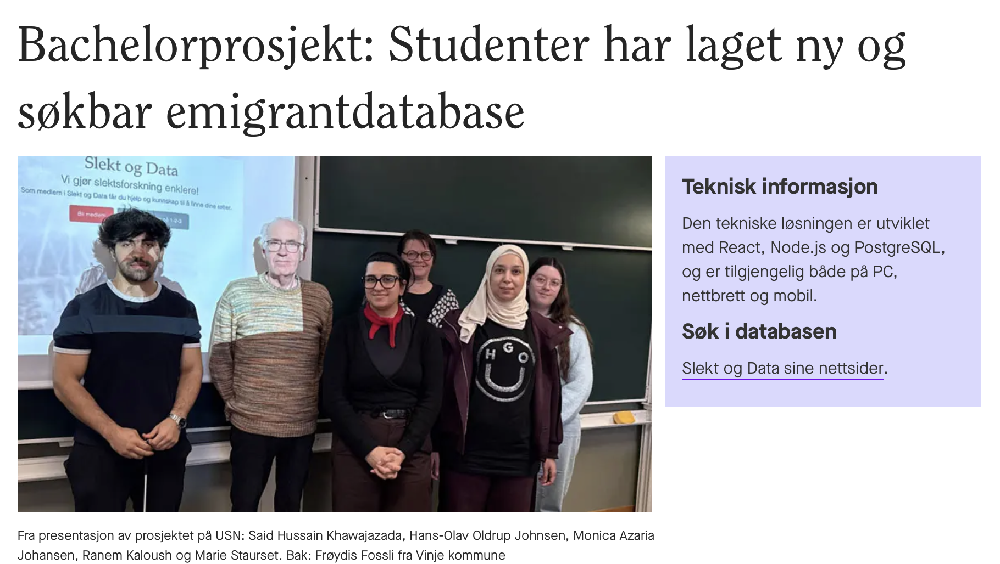
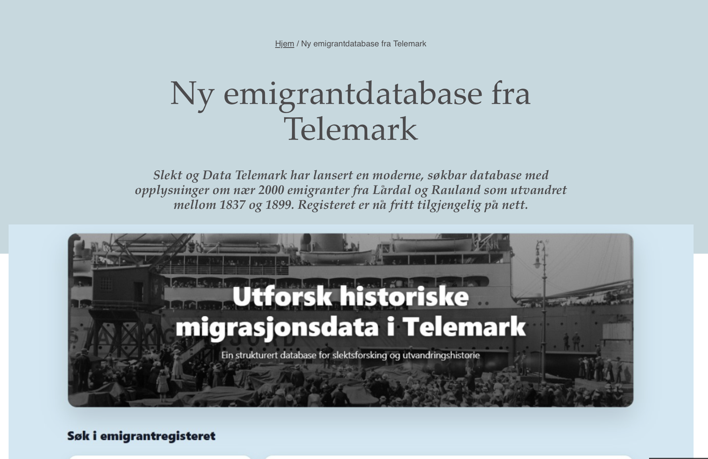
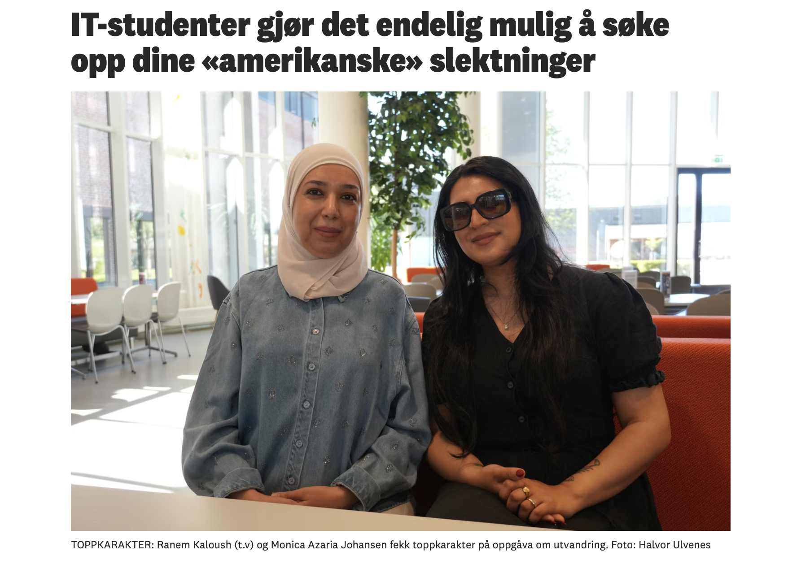
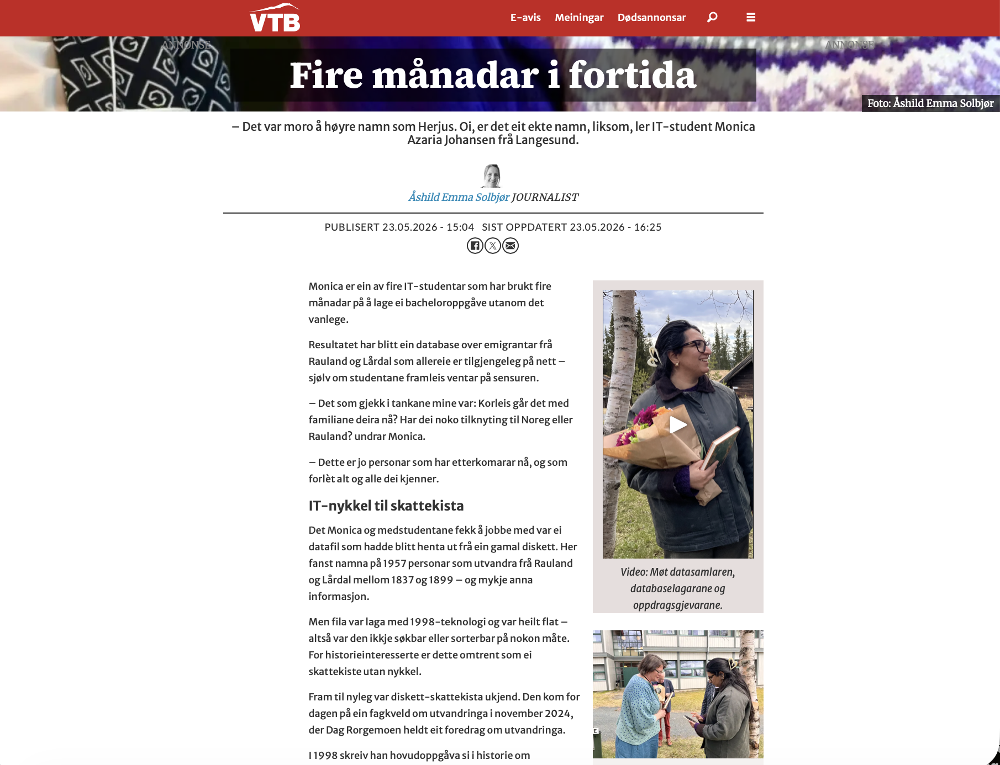

Media Coverage

University of South-Eastern Norway
USN article about our bachelor project and the searchable emigrant database.

Slekt og Data
Article about the new searchable emigrant database from Telemark.

Telemarksavisa
Newspaper article about how the project makes historical family research easier.

Vest-Telemark Blad
Local newspaper coverage of the bachelor project and the work behind it.